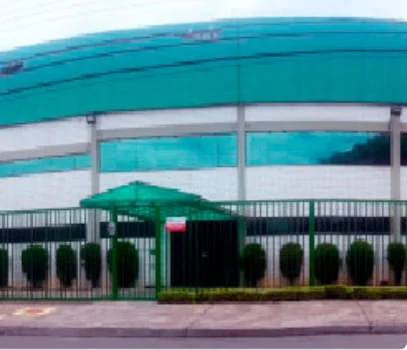
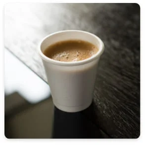

Missão
Promover praticidade, qualidade, higiene e sustentabilidade para o setor alimentício e seus consumidores.
Jin Embalagens
Desde 1989, a Jin distribui embalagens descartáveis e fabrica filmes de PVC para o setor alimentício.
Conhecer o catálogo
Nossa história
Em atividade desde 1989, a Jin atende negócios que precisam armazenar, expor e transportar alimentos. Seu catálogo reúne copos, potes, bandejas, garrafas e outros descartáveis em plástico, isopor e materiais laminados.
O Grupo Jin também atua em embalagens flexíveis com a HM Life, marca de filmes de PVC produzidos pela VFilm.
O que orienta a Jin
Promover praticidade, qualidade, higiene e sustentabilidade para o setor alimentício e seus consumidores.
Ser referência em embalagens descartáveis, com atendimento preciso, atenção às demandas do setor e inovação contínua.
Buscar a satisfação de clientes e colaboradores e superar suas expectativas.
Qualidade, respeito às pessoas e ao meio ambiente e melhoria contínua refletem os compromissos divulgados pela Jin.
Quem atendemos

Embalagens para refeições, lanches e pedidos para viagem.
Ver linha fast food
Copos e embalagens para servir, expor e levar.
Ver linha de padaria
Opções para varejo, exposição de alimentos e produtores rurais.
Ver linha de hortifruti
Da escolha à entrega
Consulte a equipe para escolher materiais e modelos de acordo com o uso, incluindo linhas para freezer e micro-ondas.
A Jin opera com frota própria e atende as regiões de Campinas, Limeira, Sorocaba, Jundiaí e Sul de Minas.
A empresa inclui responsabilidade socioambiental em seus compromissos e orienta o descarte adequado de materiais recicláveis.
Consulte modelos que podem receber a identidade visual da sua marca e solicite uma simulação.
Atendimento Jin